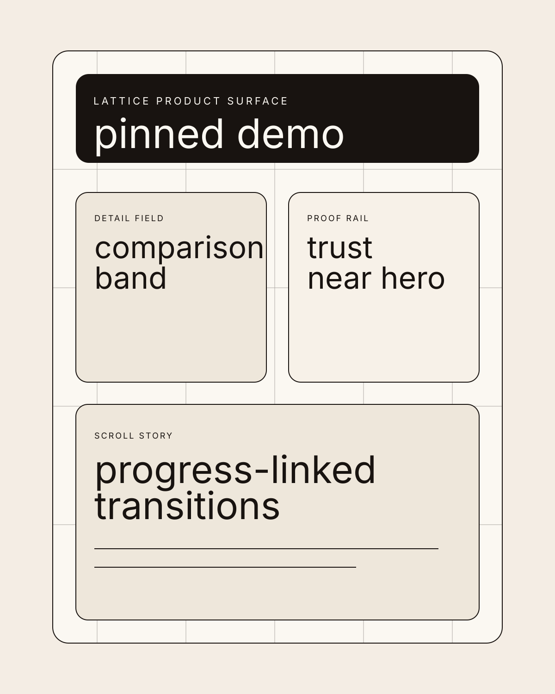
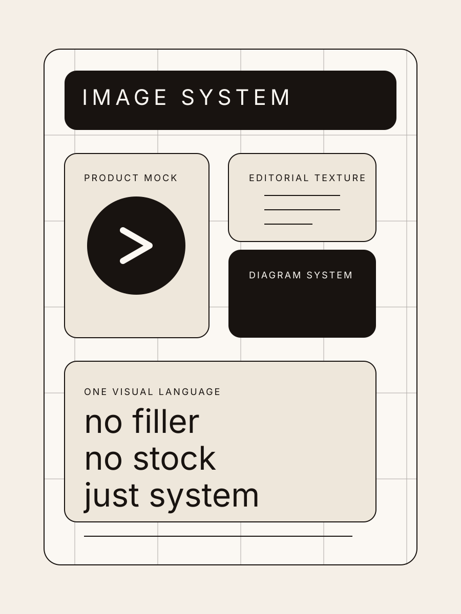

Private coastal retreat
Stay inside a quieter kind of luxury.
Solenne House is a high-end hospitality site selling confidence, atmosphere, and reservation desire. The buyer is a leisure traveler with taste. The goal is not “learn more.” The goal is to make the stay feel inevitable.
Destination stays
Private residences
Seasonal bookings

Property note
A hospitality site should seduce before it explains.
This layout moves like a boutique hotel book: centered thesis, cinematic image block, editorial details, and a cleaner path to booking.
Residences
Three ways to stay, all designed for slower time.
This site is warmer, image-led, and more emotionally paced than the enterprise example. The product is a booking decision, so atmosphere carries more weight than system explanation.
Cliff residence
For long mornings and sea-facing dinners.
Two suites, private terrace, dedicated host, and a living space arranged for quiet entertaining.
Garden house
For slower family stays.
Shaded courtyard, outdoor bath, child-ready service flow, and a more grounded interior palette.
Studio suite
For short ritual-led escapes.
Compact but deeply considered, with sunrise breakfast service and evening tea already built into the stay.
Experience thesis
"The booking should feel like entering a world, not selecting inventory."
This is why the page uses slower typography, more air, and image-led sequencing rather than dense feature proof.
Arrival
Sunset transfer and private check-in.
The first touchpoint is quiet, low-friction, and intentionally ceremonial.
Morning
Guided breakfast and water schedule.
Every stay begins with one house ritual that makes the property memorable beyond aesthetics.
Evening
Dining, reading, and slow service cadence.
The site sells how the place feels after 6pm, because that is where desire actually sharpens.
Guest note
"It felt less like a resort and more like a private house with impossible service."
Trust on a hospitality page is built through tone, specificity, and restraint rather than loud conversion pressure.
House journal
Seasonal tables, local ceramic commissions, and shoreline itineraries.
A luxury property site should create an editorial surface around the stay so the brand extends beyond booking mechanics.
Booking signal
Limited inventory, longer lead windows, and concierge contact before purchase.
The site is designed to make higher-intent booking feel natural instead of transactional.